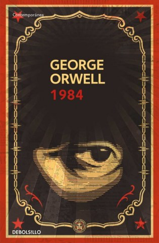

-
Foundation Trilogy (Isaac Asimov)

Foundation is set in the future, when the world is barely remembered, and humans have colonized the galaxy. The book introduces Hari Seldon, a brilliant visionary and psychohistorian whose job is to use mathematics and probability to predict the future
-
Foundation Trilogy (Isaac Asimov)
The book is set in 1984 in Oceania, one of three perpetually warring totalitarian states (the other two are Eurasia and Eastasia). Oceania is governed by the all-controlling Party, which has brainwashed the population into unthinking obedience to its leader, Big Brother. The Party has created a propagandistic language known as Newspeak, which is designed to limit free thought and promote the Party’s doctrines. Its words include doublethink (belief in contradictory ideas simultaneously), which is reflected in the Party’s slogans: “War is peace,” “Freedom is slavery,” and “Ignorance is strength.” The Party maintains control through the Thought Police and continual surveillance.
-
One hundred years of solitude (Gabriel Garcia Marquez)

This is the author's epic tale of seven generations of the Buendía family that also spans a hundred years of turbulent Latin American history, from the postcolonial 1820s to the 1920s. Patriarch José Arcadio Buendía builds the utopian city of Macondo in the middle of a swamp